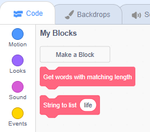

Introduction
Unscrambling a scrambled word, that is, shuffling the letters around until you discover the real word, is a fun challenge.
We're going to build a word unscrambler in Scratch.
Remember how computers are crazy fast? With this unscrambler, you will be able to unscramble much faster than the average human brain. (Maybe you could race some friends?)
Word list
Computers don't really speak English. When our project starts shuffling letters around, it won't know if it's found a real word, unless we give it a list of real words to compare against.
Start from an empty Scratch project (rpf.io/scratch-new — remember to delete the cat sprite). This will be another Sprite-less project.
Make a list called WORDS. We now need to fill that list with every word in the English language.
Guess how many words there are in English?
It's hard to say exactly how many words there are in English, but there are definitely more than 10,000. There's a list of English words (that's free for us to use) which contains almost 70,000. Click the below link to open the list of words in a new tab, right-click somewhere on the web page, and click 'Save as'. Save the file to your laptop, noting where you save it (e.g. Desktop, Downloads, etc). Here's the link: https://www-personal.umich.edu/~jlawler/wordlist
Right click on the (empty) WORDS list on the stage. Click 'import'...
... and select the 'wordlist' file you just downloaded. Does your stage look like this?
I recognise some of the words in the list, like 'a' and 'aardvark', but there's a few in there I didn't know, like 'a-horizon', which is apparently a layer of soil.
Let's keep going.
Matching length
We need a human to type in a scrambled word, so add a when  clicked
and snap an ask Please enter a scrambled word and wait underneath.
clicked
and snap an ask Please enter a scrambled word and wait underneath.
Where is the scrambled word stored?
We need to loop through the list of all words, checking each to see if we could rearrange the letters in answer to match it. But we want our unscrambler to be fast, and there's a trick to speed things up. Can you guess it?
Whenever we shuffle letters in a word around, we don't change the number of letters in that word, so we can make our unscrambler faster if we just ignore words with the wrong length.
Make a second list called WORDS WITH MATCHING LENGTH.
We want to loop over the list of all words, looking for those that match the length of answer. What problem do you foresee?
How could we avoid this problem?
Make a Block called Get words with matching length (without screen refresh).
Create a variable i (and uncheck it — we don't need to see it).
Here comes a very common pattern (not just in Scratch but in many other programming languages):
- set i to 1
- add a repeat loop (in our particular case, the number of times we repeat is the number of items in WORDS, i.e. length of WORDS)
- change i by 1 (also called 'incrementing i')
Does this look at all familiar?
Add some code to copy from WORDS to WORDS WITH MATCHING LENGTH:
What will this code do?
Run that Block (by clicking on Get words with matching length). What happens?
Remember, we don't want to copy all the words, only the ones with the same length as answer. So add a delete all of WORDS WITH MATCHING LENGTH at the start of the Block (so we always start from a clean slate) and add an appropriate if-then block inside the loop:
Snap a Get words matching length under the ask Please enter a scrambled word and wait.
Click the green flag and enter a scrambled word (maybe 'taplop'?) — what happens?
Good. Now for the tricky part.
Strings and lists
We need to work through each word-with-matching-length, seeing if its letters could be rearranged to match answer. Here's how — we'll alphabetically sort all the letters in answer, and alphabetically sort all the letters in each word-with-matching-length. If those two strings of letters (or 'strings', for short) are the same, then we've just unscrambled answer.
An example might help. If we pass in the scrambled word taplop, we'll sort that to make the string aloppt (a comes before l in the alphabet, which comes before o, and so on). Then we'll start working through the list of six-letter-long words:
- First up is adagio, which we sort to make aadgio; that's different from aloppt, so we haven't unscrambled our word yet.
- The next six letter word is adalia, which we sort to make aaadil; that's also different from aloppt so we still haven't unscrambled our word.
- Most words won't match but eventually we'll get to the word laptop, which we'll sort to make aloppt; that's a match, so we know that taplop can be unscrambled to make laptop. (Can you spot how?)
Scratch lets you do some things to a string, e.g. length of apple tells you the length and letter 1 of apple gets you the letter at a certain index, but it won't let you shuffle around the letters in a string.
But what if we turned our string of letters into a list of letters called LETTERS?
Make a new block called String to list, adding an input (number or text) named 'string' and running without screen refresh:
Make a list called LETTERS and delete all its items at the start of the String to list definition (clean slates are good):
Loop over each letter in string, adding it to LETTERS, using the variable i like before:
Let's test — type the word life into the String to list 'slot' and click the Block to run it:
What happens?
How did the Block know which letters to put in LETTERS?
We're going to alphabetically sort these letters in just a moment but, after they've been sorted, we'll want to turn them back from a list to a string.
Let's make a Block to do that now — call it List to string and run it without screen refresh (we won't pass it an input; it will always use the LETTERS list).
Create a variable value and set it to 'empty' at the start of the block:
Loop over every item in LETTERS, building our string letter by letter:
Click List to string to run the code under its definition. What happens?
How does this work?
Good. We can now turn any string into a list, which will let us alphabetically sort its letters, and we can turn that list back into a string when we're done.
Bubble time.
Bubble sort
You might think that alphabetically sorting a list of letters would be simple, but there are actually dozens of 'sorting algorithms' (that is, lists of instructions for how to sort) all with their advantages and disadvantages.
We're going to use (our version of) the 'Bubble sort' algorithm because it's easy to understand (although it's not the fastest). It works by comparing the first pair of letters, swapping them if they're not in alphabetical order, then moving on to the next pair, and so on until we've compared all pairs:
After this first pass, are all the letters — i, f, e, l — in alphabetical order?
Correct — for example i should come after f, since it comes after f in the alphabet. We need to go back to the beginning and make another pass:
The letters are still not in alphabetical order. We actually need to go back to the beginning and make three passes if there are four letters, four passes if there are five letters, and so on:
The letters — e, f, i, l — are now all in alphabetical order.
There are a few ways to make this algorithm slightly faster and, if you spotted any, well done. For example:
- The first pass needs to compare all pairs, but the second pass can skip the last pair, the third pass can skip the last two pairs, and so on, because the bubbles 'carry' the latest letters in the alphabet to the end.
- If any pass swaps no letters, we don't need any more passes — if a string is already sorted, the first pass will swap nothing and we can quit at that point.
Let's make this in Scratch. We'll need to do some swaps so create a Block for that — call it Swap, run it without screen refresh, and add two inputs (number or text) named i1 and i2 which will be the indexes of the items we want to swap.
It would be nice to replace the item at i1 with the item at i2, and then replace the item at i2 with the item at i1, but would that work?
After we replace the item at i1, its old value is overwritten! So, to swap, we need to store its value temporarily.
Make a variable called temp (and uncheck it).
Store the item at i1 in temp, then replace it with the item at i2, then replace the item at i2 with temp:
Call Swap 1 3. What happens?
Make a Block called Sort - single pass (without screen refresh).
In its definition, loop over all pairs of letters (noting that the number of pairs is one less than the number of letters) and swapping them if the first in the pair comes after the second in the pair:
Now make a Block called Sort - all passes (without screen refresh).
In its definition, repeatedly run Sort - single pass. Remember you need to run one less times than the number of letters:
Run Sort - all passes. What happens?
Good. We just made the Bubble sort algorithm in Scratch. Let's bundle everything together — make a Block called Sort string, without screen refresh, adding an input (number or text) named 'string'.
Its definition should turn string into a list, sort the items in that list, then turn the list back into a string:
Let's test — call Sort string, passing in a word, and confirm that value ends up containing the alphabetically sorted letters in that word.
Snap Sort string answer underneath Get words with matching length.
Now we just need to match our alphabetically sorted string with alphabetically sorted real words.
Matches
The alphabetically sorted letters in answer are stored in value. We're about to overwrite that, so make a new variable called sorted answer (uncheck it) and copy value across:
Make a new Block named Get matches (without screen refresh). Make a new list (to store any matches we find) named MATCHES, and delete all its items at the start of Get matches's definition.
We're about to loop over WORDS WITH MATCHING LENGTH but we mustn't use i to store the index because inside the loop we're going to use i for sorting the string. So, make a new variable j (uncheck it) and use it to loop over WORDS WITH MATCHING LENGTH:
Now, inside the loop, we need to sort the letters in each word. We worked hard to sort the letters in answer... do we need to do all that work again?
Correct. Add a call to Sort string, passing it item j of WORDS WITH MATCHING LENGTH.
Reuse is a beautiful thing. Not only does it save work but, if we find a bug in a Block, we can fix the bug in one place, and everywhere that calls that Block gets that fix too.
Now we simply need to compare the string we just sorted (which will be stored in value) with sorted answer and, if they match, copy the word to MATCHES:
Run Get matches. What happens?
Put everything together — snap Get matches underneath set sorted answer to value:
Uncheck all the lists and variables except for MATCHES. Click the full screen button, click the green flag, and see how quickly the computer can unscramble the words you give it.
(Here's a challenge, try and unscramble 'poreumct' faster than your Scratch project.)
Next steps
Save your project. What else could you do?
Could you search for the word with the most anagrams?
Could you search for words whose letters are already alphabetically sorted?
What ideas can you come up with?
What did you think of this module?
I didn't like it
It was OK

I loved it